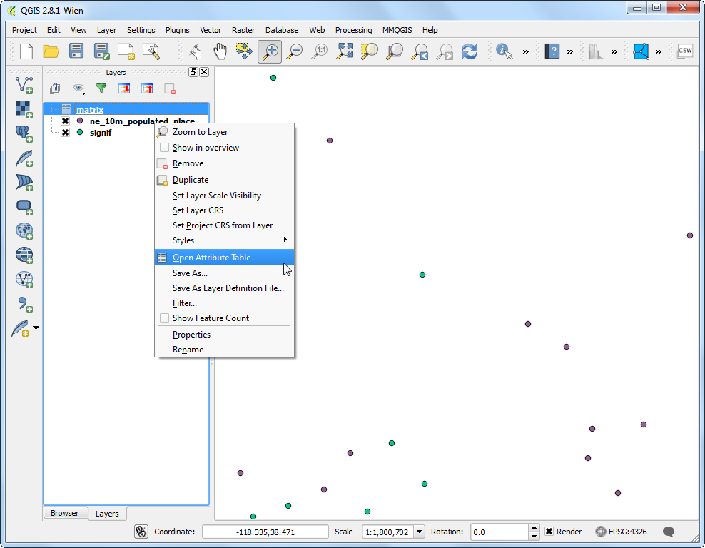
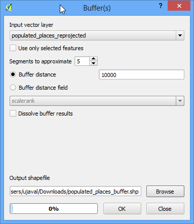
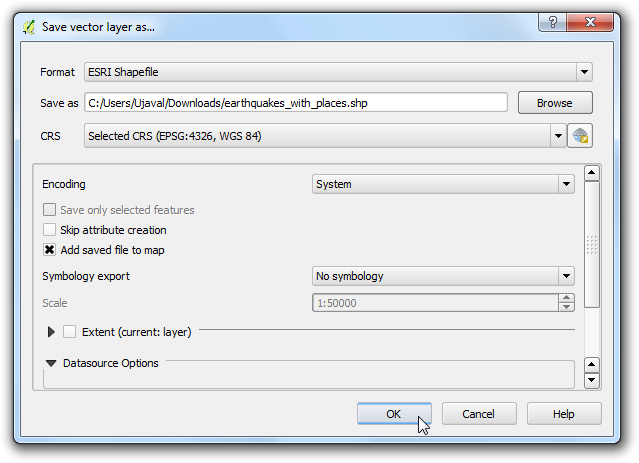
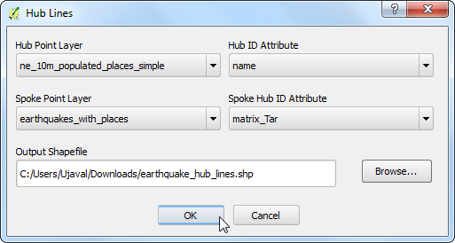
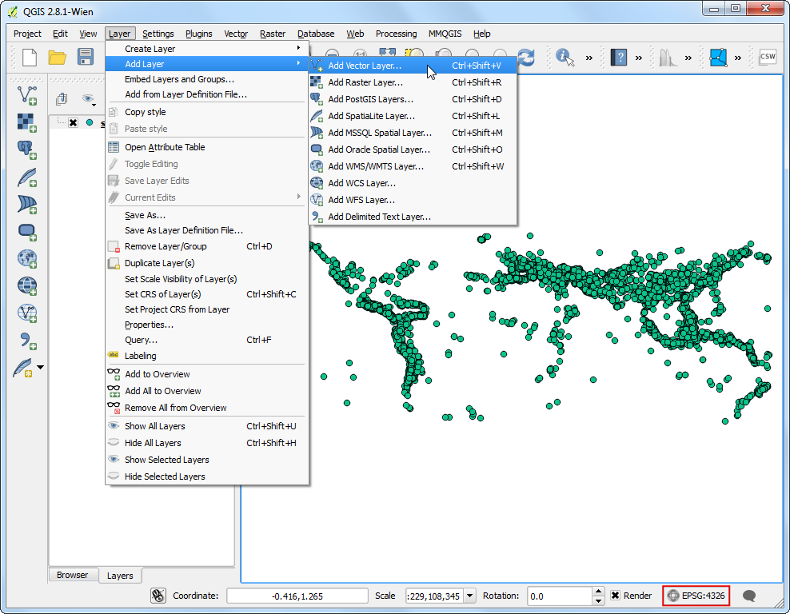
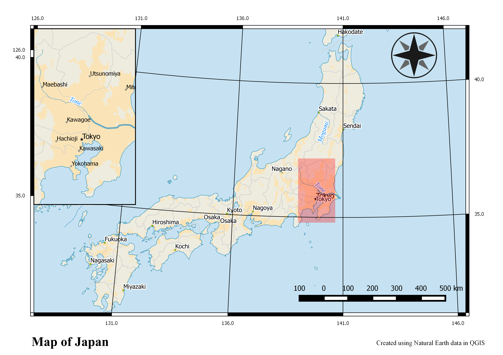

Erstellen einer Karte
Oft ist es nötig eine Karte zu erstellen, die gedruckt oder veröffentlicht werden kann. QGIS hat ein leistungsfähiges Werkzeug, welches sich Print Composer nennt oder in deutsch als Druckzusammenstellung bezeichnet wird. Dieses ermöglicht, aus Ihren Layern und Sammlungen eine Karte zu erstellen.
Übersicht der Aufgabe
Die Anleitung zeigt, wie eine Karte von Japan mit Standard-Kartenelementen wie Karte, Gitter, Nordpfeil, Maßstabselement und Beschriftungen erstellt wird.
Weitere Fähigkeiten, die Sie erlernen
Daten besorgen
Wir werden den Datensatz von Natural Earth verwenden - konkret das Natural Earth Quick Start Kit, welches mit schön gestalteten Layern kommt und direkt in in QGIS geladen werden kann.
Download des Natural Earth Quickstart Kit.
Datenquelle [NATURALEARTH]
Arbeitsablauf
Laden und entpacken Sie das Natural Earth Quick Start Kit. Öffnen Sie QGIS. Klicken Sie auf .

Navigieren Sie zum Verzeichnis, wo Sie die Natrual Earth Daten entpackt haben. Sie sollten eine Datei sehen, die Natural_Earth_quick_start_for_QGIS.qgs benannt ist. Das ist die Projektdatei, die die vordefinierten Layer im QGIS Dokumentformt enthält. Klicke Öffnen

Sie sollten eine ganze Anzahl an Layern in der Legende sehen und eine gestaltete Weltkarte im QGIS Kartenfenster

In diesem Tutorial erstellen wir eine Karte von Japan. Klicke die Hineinzoomen Schaltfläche und zeichnen Sie ein Rechteck um Japan, um auf den Ausschnitt zu vergrössern.

Sie können mehrere Kartenlayer ausschalten, die wir für diese Karte nicht benötigen. Deaktivieren Sie die Checkbox neben dem 10m_geography_marine_polys und 10m_admin_0_map_units Layer. Bevor wir eine taugliche Karte für den Druck erstellen, müssen wir eine geeignete Projektion auswählen. Die verwendeten Daten kommen in einem Koordinatenbezugssystem (KBS), in dem die Einheiten in Bogengrad verwendet werden. Dies ist für eine Karte ungeeignet, wenn man Distanzen in Kilometern oder Meilen verwenden möchte. Dazu benötigen wir ein projiziertes Koordinatensystem, das die Verzerrungen für unser Interessensgebiet minimiert und Meter als Einheit verwendet. Universal Transverse Mercator (UTM) ist eine gute Wahl für ein solches projiziertes Koordinatensystem. Es ist ebenso global gültig, so dass es ein guter verwendbarer Standard ist. Verwenden Sie die UTM-Zone, in der Ihr Interessensgebiet liegt, um die Verzerrung für den Breich zu minimieren. In unserem Fall werden wir die UTM-Zone 54N benutzen. Klicke den KBS Status Button unten rechts im QGIS-Fenster.
Bemerkung
Für Japan ist das Japan Plane Rectangular CS ein projiziertes Koordinatenbezugssystem (KBS), das für minimale Verzerrungen gedacht ist. Es ist in 18 Zonen unterteilt. Wenn Sie in kleineren Regionen Japans arbeiten, ist es besser dieses KBS zu verwenden.

Aktivieren Sie Spontan-KBS-Transformation aktivieren. Geben Sie Tokyo utm zone54n im Filter Suchfeld ein. Wenn Sie die Ergebnisse sehen, wählen Sie Tokyo / UTM Zone 54N - EPSG:3095. Klicke Anwenden.

Nun können wir beginnen, unsere Karte zusammen zu stellen. Gehen Sie zu .

Sie werden aufgefordert einen Titel für die Zusammenstellung einzugeben. Sie können es auch leer lassen und mit Ok bestätigen.
Bemerkung
Wird kein Titel eingegeben, wird automatisch eine Name vergeben wie Composer 1.

Im Zusammenstellungsfenster klicken Sie Volle Ausdehnung, die gesamte Fläche des Layouts darzustellen. Nun möchten wir die Kartenansicht, die wir in der QGIS Arbeitsfläche sehen in den Composer bringen. Gehen Sie zu .

Sobald der Button Neue Karte hinzufügen aktiv ist, halten Sie die linke Maustaste gedrückt und ziehen ein Rechteck auf, wo Sie die Karte einfügen möchten.

Das Rechteck wird mit dem Inhalt der QGIS Arbeitsfläche gerendert. Dabei kann möglicher Weise der Kartenauschnitt nicht den kompletten Bereich abdecken. Wählen Sie , um die Karte im Fenster anzupassen und zu zentrieren.

Wir korrigieren den Zoom-Level für die dargestellte Karte. Klick Elementeigenschaften Tab und geben Sie 7000000 für den Maßstab ein.

Nun ergänzen wir eine Detailansicht für den Bereich von Tokyo. Bevor wir irgenwelche Änderungen bei den Layern des QGIS-Hauptfensters vornehmen, aktivieren Sie Layer des Kartenelements festhalten und Stile des Kartenelements festhalten. Dies stellt sicher, dass -falls wir Layer deaktivieren oder deren Darstellung ändern- diese Ansicht sich nicht ändert.

Wechseln Sie in das QGIS-Hauptfenster. Verwenden Sie guilabel:Hineinzoomen, um auf den Bereich um Tokyo zu zoomen.

Es gibt ein paar doppelte Label durch den Layer ne_10m_populated_places. Diesen können wir für diese Ansicht ausschalten.

Wir können jetzt die Detaikarte hinzufügen. Wechseln Sie in das Fenster der Druckzusammenstellung. Gehen Sie zu .

Ziehen Sie ein Rechteck an der Stelle auf, an der Sie die Übersichtskarte hinzufügen möchten. Sie werden feststellen, dass es nun 2 Kartenobjekte in der Druckzusammenstellung gibt. Stellen Sie sicher, dass Sie die richtige Karte ausgewählt haben, wenn Sie Änderungen vornehmen. Selektieren Sie das Objekt Karte 1, welches wir gerade im Elemente Panel hinzugefügt haben. Wählen Sie den Elementeigenschaften Reiter. Scrollen Sie zum Eintrag Rahmen und Aktivieren Sie die Checkbox. Sie können die Farbe und Randbreite des Rahmens ändern, so dass dieser sich vom Kartenhintergrund abhebt.

Eine schöne Funktion der Druckzusammenstellung ist, dass sie automatisch den Bereich der Hauptkarte hervorheben kann, der in unserem Ausschnitt dargestellt wird. Wählen Sie Karte 0 im Element Bereich. Scrollen Sie im Elementeigenschaften Reiter zu Übersichten. Klicke Eine neue Übersicht hinzufügen.

Wählen Sie Karte 1 als Kartenrahmen. Damit hebt die Druckzusammenstellung den Bereich im aktuellen Objekt Karte 0 hervor, der der Ausdehnung von Karte 1 entspricht.

Nun ist unser Kartenausschnitt soweit fertig und wir fügen ein Raster und einen Zebra-Rand zur Hauptkarte hinzu. Wählen Sie das Karte 0 Objekt im Elemente Reiter. Im Elementeigenschaften Bereich scrollen Sie zu Gitter. Klicke Neues Gitter hinzufügen.

Standardmässig werden die selben Maßeinheiten und Projektionen verwendet, wie die derzeit gewählte Kartenprojektion. Wie auch immmer ist es üblich und nützlich, Gitterlinien in Bogengrad darzustellen. Wir können ein eigenes KBS für das Gitter auswählen. Klicke auf ändern... neben dem Eintrag KBS.

Im Koordinatenbezugssystem-Auswahl Fenster geben Sie im Filter 4326 ein. In der Trefferliste wählen Sie WGS84 EPSG:4326 als KBS. Klicken Sie OK.

Geben Sie als Interval den Wert 5 Grad in den beiden Feldern X und Y ein. Sie können den Versatz anpassen, um zu definieren, wo die Gitterlinien dargestellt werden.

Gehen Sie weiter zu Gitterrahmen und wählen Sie einen Rahmenstil, der Ihnen passt. Aktivieren Sie zusätzlich die Koordinaten zeichnen Checkbox.

Passen Sie Abstand zum Kartenrahmen an, bis die Koordinaten lesbar sind. Passen Sie die Koordinatengenauigkeit auf 1 an, so dass nur die erste Dezimalstelle dargestellt wird.

Nun fügen wir einen Nordpfeil hinzu. Die Druckzusammenstellung hat eine schöne Auswahl von kartenbezogenen Grafiken, die einige Nordpfeile beinhalten. Klicken Sie .

Zeichnen Sie mit gedrückter linker Maustaste ein Rechteck in der oberen rechten Ecke der Karte. Im rechtsseitgen Panel erweitern Sie im Bereich Bild den Eintrag Verzeichnisse durchsuchen und wählen einen geeigneten Nordpfeil.

Jetzt fügen wir eine Maßstableiste hinzu. Klicke .

Klicken Sie im Layout an die Position, wo der Maßstab dargestellt werden soll. Im Elementeigenschaften Bereich stellen Sie sicher, dass Sie das richtige Kartenelement ausgewählt haben, für das der Maßstab angezeigt werden soll. Wählen Sie den Stil der Ihren Anforderungen genügt. Im Bereich Segmente können Sie Anzahl der Segmente und deren Grösse anpassen.

Es ist Zeit unsere Karte zu beschriften. Klicken Sie .

Klicken Sie auf die Karte und zeichnen Sie einen Kasten, wo die Beschriftung sein soll. In den Elementeigenschaften erweitern Sie Haupteigenschaften und geben einen wie unten angegebenen Text ein. Wir können auch den Text als HTML eingeben. Aktivieren Sie dazu die Box Als HTML darstellen, so dass die Druckzusammenstellung HTML Tags interpretiert.
<div align=center>
<h1>Map of Japan</h1>
</div>

Verfahren Sie ähnlich, um eine weitere Beschriftung für die Angabe der Daten- und Softwareherkunft zu erstellen.

Wenn Sie mit der Karte zufrieden sind, können Sie diese als Bild, PDF oder SVG exportieren. In diesem Tutorial exportieren wir diese als Bild. Klicken Sie .

Speichern Sie die Grafik in einem Ihnen bevorzugten Format. Unten ist das Ergebnis als PNG Bild.
